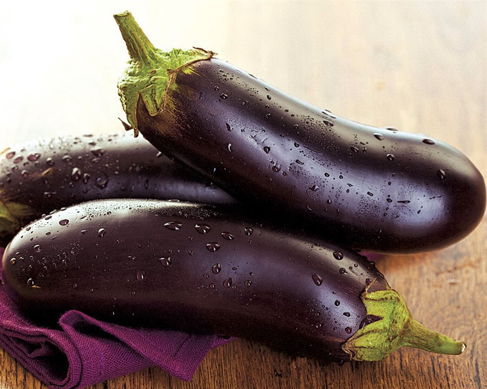

Cinta untuk bumi melekat dalam diri manusia pada tingkat insting. Bumi memberi kita makan dan disiram sejak dahulu kala. Selama berabad-abad, manusia telah memupuk bumi; spesies baru dan subspesies tanaman, bunga, pohon dikembangkan; makan buah yang kaya. Tidak semua orang di dunia modern suka berkebun, menyiangi tempat tidur, menanam kebun, tetapi tanpa kecuali, mereka mencintai dan menghargai segala sesuatu yang dapat ditanam di tanah. Kami dengan senang hati menyambut semua pecinta sejati pondok dan kebun di toko daring benih dan produk kebun kami!

Toko benih online kami menawarkan segalanya untuk taman kepada pengunjung:
1. Membiakkan dan beri untuk tanah favorit Anda. Di sini Anda dapat memilih dan membeli benih untuk berbagai jenis tanah, untuk segala cuaca dan cuaca buruk - dari mentimun dan peterseli biasa hingga semua jenis kol, melon, dan terong; dan beragam pilihan bumbu dan rempah-rempah akan mengejutkan bahkan para spesialis kuliner tercanggih;
2. Biji bunga tanaman dalam ruangan yang akan membantu menciptakan taman musim dingin yang unik sehingga rumah Anda berbau segar, nyaman dan damai, serta biji bunga tanaman tahunan dan abadi untuk petak bunga Anda sendiri di dekat rumah, gazebo atau pondok musim panas, untuk menyenangkan Anda dan Anda orang yang dicintai;
3. Kumpulan benih dipilih oleh para ahli kami , berkat panen Anda di musim baru akan memenuhi semua harapan;
4.Kualitas produk perlindungan tanaman : herbisida terhadap gulma, insektisida dari hama, pelindung untuk mengolah sayuran, acaricides dari kutu dan parasit, rodentisida dari tikus, fungisida dari jamur dan lainnya;
5. Terbukti pupuk untuk bibit, kentang dan tanaman umbi-umbian, mentimun dan tomat, untuk buah dan tanaman berry dan pupuk universal untuk berbagai jenis tanah.
Benih sayuran di toko kami diwakili oleh produsen terbaik dari Prancis, Belanda, dan negara-negara lain, yang benih ujinya digunakan oleh tukang kebun dan tukang kebun di seluruh dunia.
Biji bunga kami memilih hanya dari produsen yang dihormati dalam lingkungan profesional dan memiliki reputasi positif dari Amerika Serikat, Belanda , Perancis dari Ukraina, untuk menyediakan pelanggannya hanya produk berkualitas untuk hasil terbaik.
Peralatan pelindung kami hanya menawarkan yang terbaik, dari pabrikan dalam dan luar negeri: Bayer (Jerman), Syngenta (Swiss), Ukravіt (Ukraina).
Pupuk di toko benih kami diwakili oleh merek dan produsen paling populer, seperti Nuz N.V. (Belgia), Fertimik dan Doktor Tarsa (Turki), Rotem Amefer (Israel), SAS (Spanyol), Scotts (Belanda), pertanian Valagro (Italia); dan untuk semua orang yang lebih suka produsen dalam negeri, kami menawarkan pilihan pupuk dari perusahaan-perusahaan Enzim, Novofert, Ukravіt dan Profesіne nasіnnya.
Manfaat dari toko benih online:
1.
Kami menjaga sistem loyalitas yang fleksibel untuk semua pelanggan. Kami sama-sama menghargai setiap pengunjung kami - penduduk musim panas pemula dan petani yang berpengalaman. Kami memilih produk terbaik untuk kebun, menyiapkan penawaran khusus dan promosi menarik;
2.
Di toko online kami, benih menerapkan pencarian produk yang nyaman untuk kebun Anda. Dengan menggunakan filter khusus untuk menemukan produk yang diperlukan di setiap bagian, Anda dapat dengan mudah menemukan benih sayuran, bunga, serta solusi yang diperlukan untuk tanaman Anda;
3.
Di toko kami, Anda memiliki kesempatan unik untuk membeli semuanya untuk kebun - dari satu paket benih yang diperlukan hingga penawaran komprehensif. Kami dapat membuatkan Anda satu set benih yang diperlukan untuk pesanan Anda sehingga Anda dapat membayar lebih sedikit;
4. Metode pembayaran online yang nyaman disediakan untuk Anda, serta kemampuan membayar tunai saat menerima barang untuk kebun; kami melakukan pengiriman benih dengan cepat - Anda dapat membeli benih dari kami melalui surat dan mendapatkan barang-barang yang diperlukan ke cabang Ukraina; Ada peluang untuk membeli benih secara grosir dan eceran;
5. Kami memberikan saran ahli gratis yang akan membantu Anda memilih benih dan produk yang diperlukan untuk kebun Anda, menjawab pertanyaan Anda, mengambil pupuk organik dan produk perlindungan tanaman.
Kami berharap Anda berbelanja menyenangkan di toko benih dan produk taman online kami, serta panen yang kaya dalam hal ini dan di semua
musim panas berikutnya!